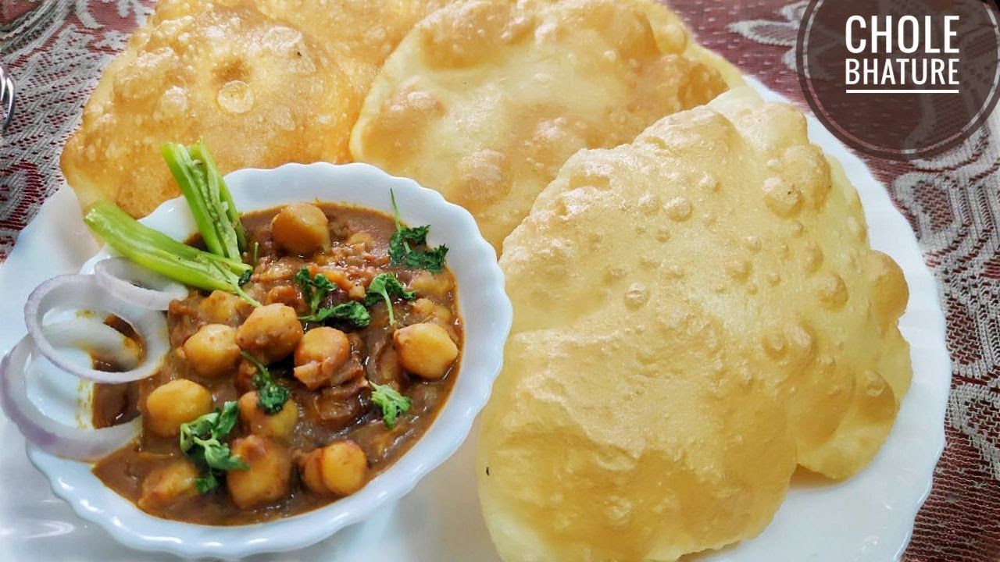

Chole Bhature

Description
Punjabi food is wholesome and full of rustic flavour. The custom of cooking in community ovens or tandoors prevails in rural pockets even today. The cuisine is characterised by a profusion of dairy products in the form of malai, paneer and dahi. The dals are a speciality of this type of cuisine, made of whole pulses like black gram, green gram and Bengal gram. They are cooked on slow fire, often simmered for hours till they turn creamy and then flavoured with spices and rounded off with malai for that rich finish. The food is simply delicious.
The most unique thing about cooking in a tandoor is the smoky flavour that the food gets making it tastier. Moreover it is a healthy way of cooking since minimum fat is required and the food generally gets cooked in its own juices thus retaining its natural flavours. Besides it is not only easy to digest, it is also very hygienic. In conclusion one can safely say that it is through tandoori cooking that Indian cuisine first got globally acknowledged.
Ingredients
- Chickpeas (kabuli chana) soaked overnight and drained 1 cup
- Tea bags 2
- Salt to taste
- Ghee 2 tablespoons
- Cumin seeds 1 teaspoon
- Green chillies slit 2
- Ginger-green chilli paste 1 tablespoon
- Coriander powder 1 tablespoon
- Cumin powder ½ teaspoon
- Red chilli powder 1 teaspoon
- Chole masala 1 teaspoon
- Dried mango powder ½ teaspoon
- Dried pomegranate seeds (anardana) roasted and coarsely crushed 1 tablespoon
- Garam masala powder 1 teaspoon
- Fresh coriander sprigs for garnishing
- Bhature
- Refined flour (maida) 2½ cups
- Baking powder ½ teaspoon
- Baking soda a pinch
- Salt to taste
- Powdered sugar 2 teaspoons
- Yogurt ½ cup
- Oil 1 tablespoon + for greasing and to deep fry
Steps
- Take chickpeas in a pressure cooker. Add tea bags, 6-8 cups water and salt, cover and cook for 15-20 minutes or till fully done and soft. Drain the chickpeas, discard the tea bags and reserve the stock.
- Sieve together flour, baking powder, baking soda, salt and powdered sugar in a parat. Add yogurt and mix well.
- Add some water and knead into a soft dough. Add 1 tablespoon oil and knead well.Set aside for 15-20 minutes.
- Heat ghee in a non-stick pan. Add cumin seeds and green chillies and sauté for 30 seconds.
- Add ginger-green chilli paste and sauté for 30 seconds. Add coriander powder, cumin powder and chilli powder and mix.
- Add chole masala and dried mango powder and mix. Add reserved stock, mix and bring mixture to boil.
- Add boiled chickpeas and ¾ cup water, mix and cook on medium heat for 8-10 minutes. Lightly mash.
- Add dried pomegranate powder and garam masala powder and mix. Add ¼ cup water. Chop tomatoes, add to pan, mix and cook for 2-3 minutes.
- Heat sufficient oil in a kadai. Divide the dough into equal portions and shape into balls. Grease worktop with some oil and roll each ball into thick discs.
- Deep-fry each disc in hot oil till light golden and puffed up. Drain on absorbent paper.
- Garnish chole with a coriander sprig and serve hot with bhature.
Credit: Recipe and description completely copied from here.